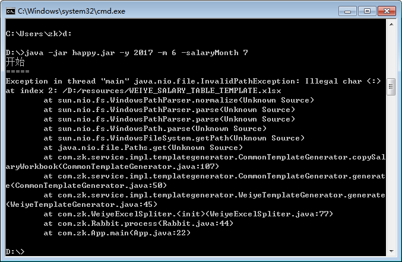

File
依赖
1 2 3 4 5
| <dependency> <groupId>commons-io</groupId> <artifactId>commons-io</artifactId> <version>2.5</version> </dependency>
|
1 2
| File file = new File("a.txt"); IOUtils.toString(file.getInputStream(), Charset.forName("UTF-8"));
|
1 2
| File file = new File("a.txt"); FileUtils.copyInputStreamToFile(response.getInputStream(), file);
|
Bytes 转为文件
1 2
| File file = new File("targetFile"); FileUtils.writeByteArrayToFile(file, "ABC".getBytes());
|
拷贝文件
1 2 3
| public static void copyFileUsingJava7Files( File from, File to ) throws IOException { Files.copy( from.toPath(), to.toPath() ); }
|
使用 Channel:
1 2 3 4 5 6 7 8 9 10 11 12
| private static void copyFileUsingChannel(File source, File dest) throws IOException { FileChannel sourceChannel = null; FileChannel destChannel = null; try { sourceChannel = new FileInputStream(source).getChannel(); destChannel = new FileOutputStream(dest).getChannel(); destChannel.transferFrom(sourceChannel, 0, sourceChannel.size()); } finally { sourceChannel.close(); destChannel.close(); } }
|
使用 Stream:
1 2 3 4 5 6 7 8 9 10 11 12 13 14 15 16
| private static void copyFileUsingStream(File source, File dest) throws IOException { InputStream is = null; OutputStream os = null; try { is = new FileInputStream(source); os = new FileOutputStream(dest); byte[] buffer = new byte[1024]; int length; while ((length = is.read(buffer)) > 0) { os.write(buffer, 0, length); } } finally { is.close(); os.close(); } }
|
Paths
注意这两个的区别:
1
| new File(srcPath).toPath()
|
第二种:
这完全是两码事，在 Windows 平台上使用第二种会抛出异常:

Java 路径
不要天真的认为分隔符总是 /，在 Windows 操作系统上问题变得异常突出，应该使用:
Java 删除目录
1 2 3 4 5 6 7 8 9
| static void deleteDir(File file) { File[] contents = file.listFiles(); if (contents != null) { for (File f : contents) { deleteDir(f); } } file.delete(); }
|
文件锁
在 RocketMQ 中，用来防止启动多个 MessageStore 服务:
1 2 3 4 5 6
| File file = new File(rootDir + File.separator + "lock"); RandomAccessFile lockFile = new RandomAccessFile(file, "rw"); lock = lockFile.getChannel().tryLock(0, 1, false); if (lock == null || lock.isShared() || !lock.isValid()) { throw new RuntimeException("Lock failed,MQ already started"); }
|
RandomAccessFile
1 2 3 4 5 6 7 8 9 10 11 12 13 14 15 16 17 18 19 20 21
| public class RandomAccessFile { public final void writeUTF(String str) throws IOException { DataOutputStream.writeUTF(str, this); } } public class DataOutputStream { static int writeUTF(String str, DataOutput out) throws IOException { if (utflen > 65535) throw new UTFDataFormatException( "encoded string too long: " + utflen + " bytes"); } }
|
所以 writeUTF 方法写入的字符串长度不能太长。推荐办法是使用 RandomAccessFile 的 write(byte b[]) 方法来写入:
1 2 3
| public void write(byte b[]) throws IOException { writeBytes(b, 0, b.length); }
|